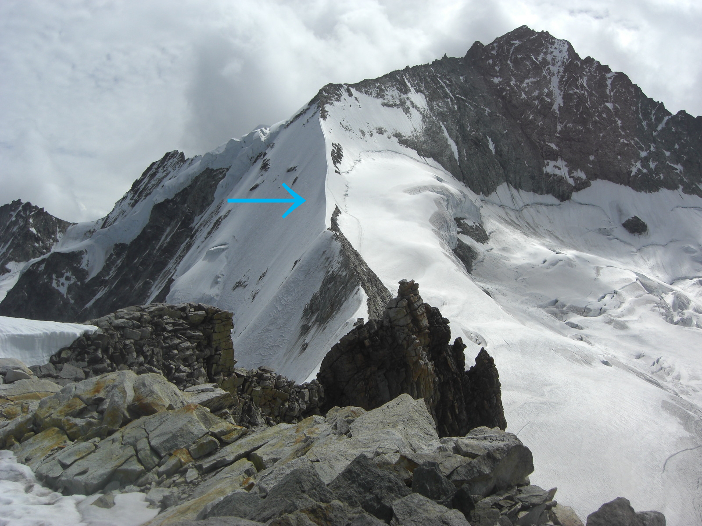
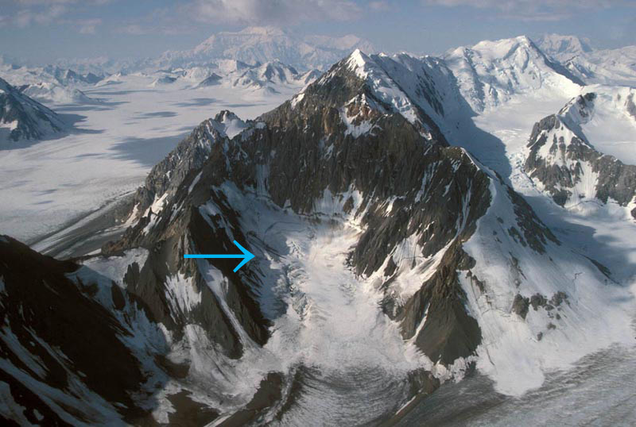
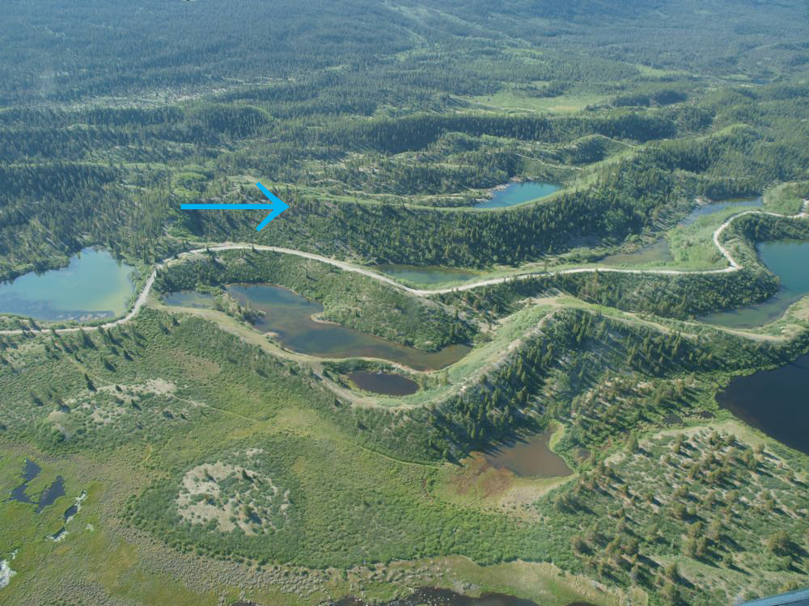
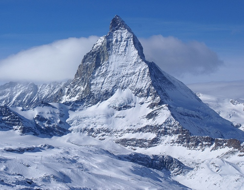
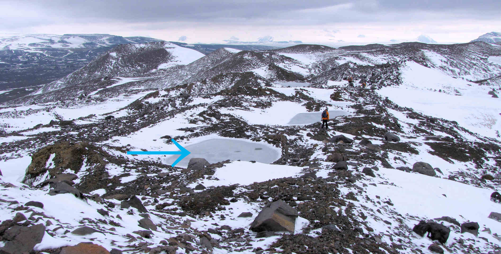
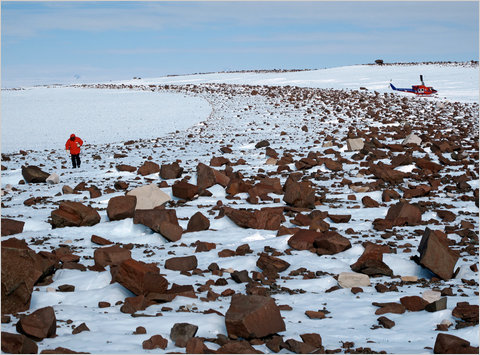
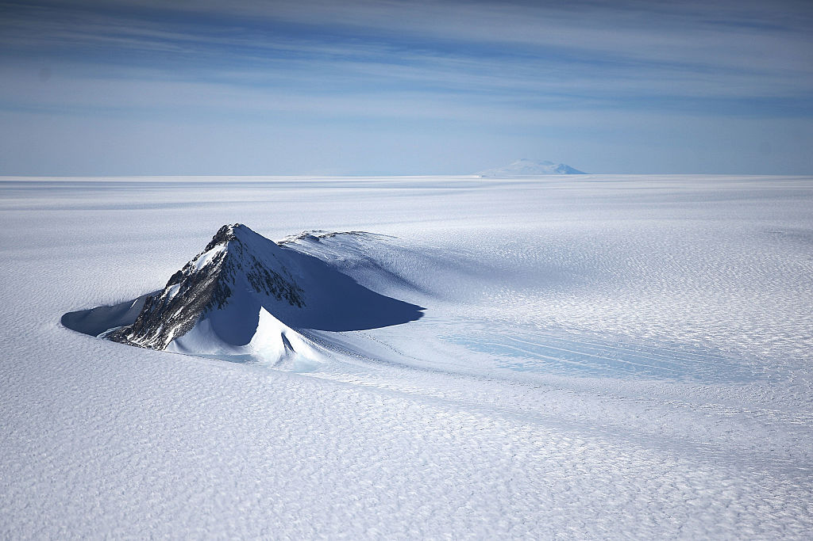
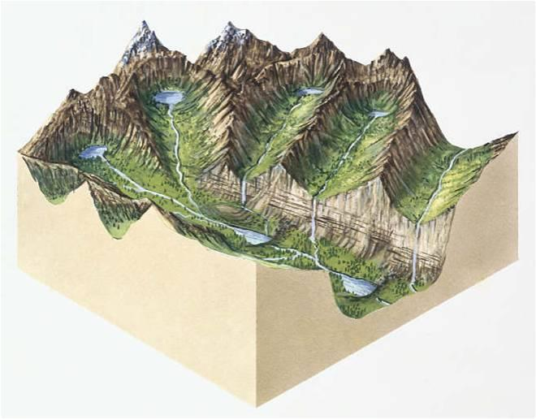
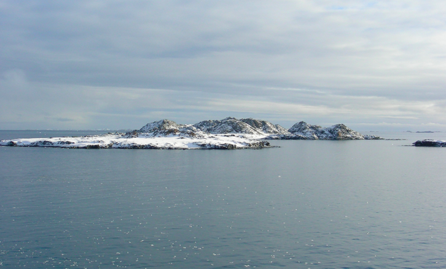

Glacial Landforms
A glacier is a massive, long-lasting mass of compacted snow and ice that moves as slowly as 10 meters per year and as quickly as 1 meter per day depending on precipitation rates. As glaciers move, they erode the land and deposit sediments and rocks which results in the creation of landforms.
| Landform | Description | Example |
|---|---|---|
| Arete | A narrow thin ridge between two cirques. |  |
| Cirque | A semicircular hollow set in a mountain slope characterized by a steep headwall and bounded on three sides. |  |
| Esker | A long snake-like ridge formed by deposition in a stream that flowed on, within, or beneath a glacier. |  |
| Fjord | A glacial valley flooded by an arm of the ocean. |  |
| Horn | A spire between three or more cirques. |  |
| Kettle | A depression in outwash created by the melting of a large chunk of ice left buried in the till by a receding glacier. |  |
| Moraine | An accumulation of till deposited directly by a glacier. |  |
| Nunatak | An isolated mountain sticking up through the ice sheet. |  |
| Paternoster Lakes | A series of small lakes connected by a small meltwater stream within an empty glacial valley. |  |
| Rock Drumlins | Smooth streamlined hills elongated parallel to the direction of former ice flow. |  |